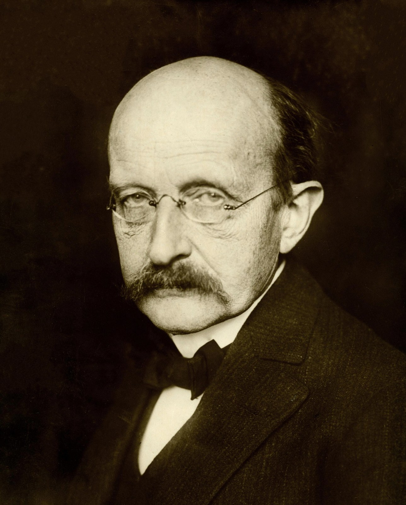
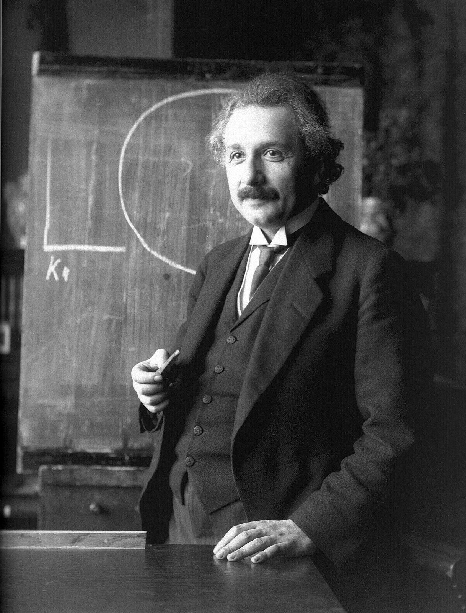

Light as particles: the photoelectric effect
Why can a dim violet lamp free electrons from a metal plate when a bright red lamp cannot?
Prior knowledge
- Planck explained the radiation of hot objects with energy packets $E = hf$chapter When classical physics ran out of answers
- The frequency and wavelength of light are linked by $c = f\lambda$, and a charge $q$ moving through a voltage $U$ gains or loses the energy $qU$ (earlier physics courses)
Think about it
Imagine a clean metal plate inside a glass tube with no air in it. You shine a very bright red lamp on the plate. Nothing happens: no electrons leave the plate, even after many minutes. Then you switch on a weak violet lamp. Electrons fly out of the plate at once. Around 1900 almost every physicist believed that light is a wave, and a stronger wave carries more energy.
How can weak light do something that strong light cannot?
Review: Planck's energy packets
Sentence starters
- Maybe the energy of light …
- A brighter lamp gives more …, but …
- Violet light could be different from red light because …
- I am not sure, but I think …
Think about it: weak light, strong effect
Discuss the opening question with a partner: how can a weak violet lamp free electrons when a bright red lamp cannot? Write two or three sentences with your best idea. It is fine to be unsure: you will test the ideas today.
Pair work: first share your ideas aloud, then each of you writes your own answer.
Model answer
Maybe the energy of light does not spread evenly over the whole wave but arrives in small pieces. If one piece of red light is too small to free an electron, many pieces do not help, so a brighter red lamp still frees nothing. Violet light could come in bigger pieces, and then even a few of them can free electrons at once. A brighter lamp would give more pieces, not bigger ones.
Assess your own answer
Tick the points your own answer already contains.
Review the theory.
Predict
Make your predictions before investigating 2 questions
Prediction 1: a shorter wavelength
Prediction 2: brighter violet light
Investigate
Simulation
How to use
Wavelength sets the colour of the light (below $380\ \text{nm}$ it is ultraviolet, drawn grey-violet). Intensity sets how many photons arrive every second. Voltage $U$ is the retarding voltage: it makes the collector negative, so it pushes the electrons back. Raise $U$ slowly until the ammeter shows $I = 0.0\ \text{nA}$: that is the stopping voltage $U_\text{s}$. The slider moves in steps of $0.02\ \text{V}$; after clicking it, the arrow keys move it one step at a time. Metal changes the work function. Speed changes only the animation.
Assumptions of the model
Each photon frees at most one electron, and only if $hf > W$. The work functions are typical textbook values (caesium $2.14\ \text{eV}$, potassium $2.29\ \text{eV}$, sodium $2.36\ \text{eV}$, zinc $4.3\ \text{eV}$); a real surface can differ by some tenths of an electronvolt. The freed electrons have kinetic energies spread evenly between $0$ and $E_{\text{k,max}}$. The current without a retarding voltage is proportional to the intensity and the same for every wavelength, a simplification. The model has no time axis, so it cannot show how long the emission takes; real experiments show no measurable delay. All readings are values of the model, not measurements.
How the calculation works
$f = c/\lambda$ and $E = hf$ with $h = 6.62607015 \cdot 10^{-34}\ \text{J} \cdot \text{s}$ (the text rounds it to $6.626 \cdot 10^{-34}\ \text{J} \cdot \text{s}$) and ${c = 2.998 \cdot 10^{8}\ \text{m/s}}$, shown in electronvolts. $E_{\text{k,max}} = hf - W$. With a retarding voltage $U$, only electrons with $E_\text{k} > eU$ reach the collector, so for $eU < E_{\text{k,max}}$
$$I = I_0 \left(1 - \frac{eU}{E_{\text{k,max}}}\right)$$
and $I = 0$ above, where $I_0 = 20\ \text{nA}$ at $100\ \%$ intensity. The current is zero from $U_\text{s} = E_{\text{k,max}}/e$ on.
A photocell: light falls on a metal plate in a vacuum tube. Change the wavelength, the intensity and the retarding voltage, and watch the electrons and the current.
Experiment 1: colour and the stopping voltage
Test prediction 1: measure the stopping voltage. The metal is sodium and the lamp is at full intensity. Start at $650\ \text{nm}$ and record the reading. Then choose shorter wavelengths, for example $500$, $450$, $400$, $350$ and $300\ \text{nm}$. At each one, raise the voltage $U$ slowly until the current is $I = 0.0\ \text{nA}$, and record. Keep your table: you need it for the conclusion.
- Initial state
- wavelength $\lambda$ = $650\,\text{nm}$, intensity = $100\,\%$, metal: sodium, voltage $U$ = $0\,\text{V}$
- Kept constant
- intensity $(\%)$, metal
- Varied
- wavelength $\lambda$ $(\text{nm})$
| wavelength $\lambda$ $(\text{nm})$ | $f\;(10^{14}\,\text{Hz})$ | $U\;(\text{V})$ | $I\;(\text{nA})$ |
|---|
Experiment 2: brighter light
Test prediction 2. Violet light ($400\ \text{nm}$) falls on sodium, and there is no retarding voltage. Change only the intensity, for example $30\ \%$, $60\ \%$ and $90\ \%$, and record the current and the largest kinetic energy at each one.
- Initial state
- wavelength $\lambda$ = $400\,\text{nm}$, intensity = $30\,\%$, metal: sodium, voltage $U$ = $0\,\text{V}$
- Kept constant
- wavelength $\lambda$ $(\text{nm})$, metal, voltage $U$ $(\text{V})$
- Varied
- intensity $(\%)$
| intensity $(\%)$ | $I\;(\text{nA})$ | $E_{\text{k,max}}\;(\text{eV})$ |
|---|
Word bank
photon · photon energy $hf$ · work function $W$ · threshold frequency · intensity · current $I$ · stopping voltage $U_\text{s}$ · largest kinetic energy $E_{\text{k,max}}$ · to free (an electron) · to absorb · to depend on · to be independent of · proportional to
Sentence starters
- The evidence suggests that …
- When we increased the intensity, …
- At a wavelength of … nm, the current stopped at …
- This does not depend on …, but it does depend on …
- The wave model predicts …, whereas the photon model …
- I agree / I disagree with you, because …
Conclusion: what frees the electrons?
Discuss with a partner, then write four or five sentences. Use the numbers in your two tables.
What decides whether electrons leave the sodium plate? What does a brighter lamp change, and what does it not change? How did the stopping voltage change when the wavelength became shorter?
Pair work: one of you explains aloud with the sentence starters, the other asks questions; then each of you writes your own answer.
Model answer
The evidence suggests that the colour of the light, not its brightness, decides whether electrons leave. At $650\ \text{nm}$ the current was $0\ \text{nA}$ even at full intensity, but at $500\ \text{nm}$ and shorter wavelengths current flowed. When we made violet light three times as intense, the current grew from $6.0\ \text{nA}$ to $18.0\ \text{nA}$, but the largest kinetic energy stayed at $0.74\ \text{eV}$. When the wavelength became shorter, the stopping voltage grew, for example from about $0.40\ \text{V}$ at $450\ \text{nm}$ to about $1.78\ \text{V}$ at $300\ \text{nm}$. So a higher frequency gives each electron more energy, and a brighter lamp only frees more electrons. These are values of a model, not measurements.
Assess your own answer
Tick the points your own answer already contains.
Review the theory.
Theory
The puzzle: what the wave model predicted
Around 1900, physicists were sure that light is an electromagnetic wave. The energy that a wave carries depends on its intensity, that is, on how much energy arrives on each square metre every second. Brighter light means a larger wave amplitude and more energy.
In 1887 Heinrich Hertz noticed that ultraviolet light helps sparks jump between two metal electrodes. Later experiments showed what was happening: light falling on a metal surface frees electrons from it. This is the photoelectric effect, and the freed electrons are called photoelectrons. In 1902 Philipp Lenard found that the energy of the photoelectrons does not depend on the intensity of the light.
The wave model made clear predictions, and the experiments did not agree with them:
| What changes | The wave model predicts | Experiments show |
|---|---|---|
| brighter light | faster electrons | more electrons, not faster |
| bright red light | electrons leave | no electrons at all |
| very dim violet light | a delay | electrons at once |
| higher frequency | no change | faster electrons |
So the largest kinetic energy of the electrons does not depend on the intensity, but it grows with the frequency of the light. Below a threshold frequency no electrons leave the metal, however bright the light is. Brighter light frees more electrons every second: the current is proportional to the intensity.
Classical physics had no answer to these observations. A new idea was needed.
Key idea
In 1905 Albert Einstein suggested that light carries its energy in small packets. Today we call these packets photons. The energy of one photon depends only on the frequency $f$ of the light: ${E = hf}$, where $h$ is Planck's constant. Violet light has a higher frequency than red light, so a violet photon carries more energy than a red one.
When light falls on a metal, one photon gives all its energy to one electron. The electron needs a minimum energy to escape from the metal surface. This energy is called the work function $W$, and it is different for different metals. If $hf < W$, the electron cannot escape, and it soon loses the energy as heat in the metal. If $hf > W$, the electron can leave, and the rest of the photon's energy becomes its kinetic energy.
The photon model explains every observation in the table. Brighter light means more photons every second, not bigger photons. So more electrons leave, and the current grows, but each electron still gets the energy of just one photon. One photon is absorbed at once, so there is no delay. And if one photon is too small, many photons do not help, because an electron practically never collects the energy of two photons.
Energies at the scale of one electron are small, so physicists measure them in electronvolts: $1\ \text{eV}$ is the energy an electron gains when it moves through a voltage of one volt, ${1\ \text{eV} = 1.602 \cdot 10^{-19}\ \text{J}}$. A photon of visible light has an energy of about $1.6\text{–}3.3\ \text{eV}$.
Einstein's photoelectric equation
The energy of a photon of frequency $f$ and wavelength $\lambda$ is
$$E = hf = \frac{hc}{\lambda}$$
where ${h = 6.626 \cdot 10^{-34}\ \text{J} \cdot \text{s}}$ is Planck's constant and ${c = 2.998 \cdot 10^{8}\ \text{m/s}}$ is the speed of light. Energy is conserved when the photon frees an electron:
$$\begin{aligned} hf &= W + E_{\text{k,max}} \\ E_{\text{k,max}} &= hf - W \end{aligned}$$
where $W$ is the work function of the metal and $E_{\text{k,max}}$ is the largest kinetic energy of the photoelectrons. Most electrons leave with less, because they lose some energy on their way to the surface. Electrons leave only when $hf > W$, so the threshold frequency is ${f_0 = W/h}$.
Measuring the energy with a stopping voltage
In a photocell, a retarding voltage $U$ between the metal plate and the collector pushes the electrons back. An electron with the charge ${e = 1.602 \cdot 10^{-19}\ \text{C}}$ loses the energy $eU$ on its way. When $U$ is large enough, even the fastest electrons turn back and the current $I$ falls to zero. This voltage is the stopping voltage $U_\text{s}$:
$$\begin{aligned} eU_\text{s} &= E_{\text{k,max}} = hf - W \\ U_\text{s} &= \frac{h}{e}\,f - \frac{W}{e} \end{aligned}$$
So the stopping voltage is a straight-line function of the frequency, and the slope of the line is $h/e$. It is the same for every metal. The work function only moves the line sideways.
This gives a way to measure Planck's constant: measure $U_\text{s}$ for two or more frequencies, find the slope of the line, and multiply it by $e$:
$$h = e \cdot \frac{\Delta U_\text{s}}{\Delta f}$$
You will do this measurement yourself with a real photocell and LEDs of different colours in the unit Fotoni lab visit: modern physics experiments.
Words of the lesson
Check the key words of the lesson.
Optional The people behind the equation
The people behind the equation
Max Planck (1858–1947)

Max Planck was a German theoretical physicist. In 1900 he found a new law for the radiation of hot objects, and on 14 December 1900 he presented its derivation to the German Physical Society. To derive it, he had to assume that energy is exchanged in packets of size $hf$. Planck saw this as a mathematical step, not as a statement about light itself, and at first he rejected Einstein's light quanta. Still, his constant $h$ became the starting point of quantum physics. He received the Nobel Prize in Physics for 1918 for his discovery of energy quanta.
Albert Einstein (1879–1955)

Albert Einstein was born in Ulm, Germany. In 1905 he worked as an examiner at the Swiss patent office in Bern and did physics in his free time. In March 1905 he sent a paper to the journal Annalen der Physik. It proposed that light itself consists of energy quanta and predicted the law ${E_{\text{k,max}} = hf - W}$. In the same year he also published special relativity. His Nobel Prize in Physics for 1921, presented in 1922, was "for his services to Theoretical Physics, and especially for his discovery of the law of the photoelectric effect".
Robert Millikan (1868–1953)
Robert Millikan was an American experimental physicist, also famous for measuring the charge of the electron with oil drops. He did not believe in light quanta, because there was so much evidence that light is a wave. So he spent about ten years testing Einstein's equation with careful measurements on several metals. His results, published in 1914–1916, confirmed the straight-line law, and in 1916 he determined Planck's constant from the slope. Millikan still doubted the explanation, but the evidence was clear. He received the Nobel Prize in Physics for 1923.
Optional Read and compare: three roles in one discovery
Read the three short biographies. Discuss with a partner, then write three sentences: one about Planck, one about Einstein and one about Millikan. Say what each one did for the photoelectric equation (proposed an idea, explained, tested). Which of them believed the photon idea at first? You can start with Planck introduced …, Einstein proposed … and Millikan tested ….
Pair work: each of you reads one or two biographies and tells your partner about them.
Model answer
Planck introduced the energy packets $hf$ in 1900 to explain the radiation of hot objects, but he thought of them as a mathematical step and at first rejected light quanta. Einstein proposed in 1905 that light itself consists of quanta and used this idea to explain the photoelectric effect with the equation $E_{\text{k,max}} = hf - W$. Millikan tested the equation for about ten years and confirmed it in 1914–1916, although he did not believe in light quanta; he also measured $h$ from the slope. Only Einstein believed the photon idea at first.
Assess your own answer
Tick the points your own answer already contains.
Review the theory.
Back to your predictions
Compare your predictions with your tables and with the photon model. Then answer the opening question in one or two sentences: why can a dim violet lamp free electrons when a bright red lamp cannot?
Would you change your prediction?
Examples
Example 1
A violet laser pointer gives light of wavelength $405\ \text{nm}$. The beam falls on a potassium plate in a vacuum tube. The work function of potassium is $2.29\ \text{eV}$. Calculate the energy of one photon in joules and in electronvolts, and the largest kinetic energy of the photoelectrons. What stopping voltage stops all of them?
Step 1/7
Given: Wavelength ${\lambda = 405\ \text{nm}}$, work function ${W = 2.29\ \text{eV}}$, Planck's constant ${h = 6.626 \cdot 10^{-34}\ \text{J} \cdot \text{s}}$, speed of light ${c = 2.998 \cdot 10^{8}\ \text{m/s}}$, elementary charge ${e = 1.602 \cdot 10^{-19}\ \text{C}}$. We want to find the photon energy $E$, the largest kinetic energy $E_{\text{k,max}}$ and the stopping voltage $U_\text{s}$.
Step 2/7
Principle: One photon gives all its energy ${E = hf}$ to one electron, and ${f = c/\lambda}$. The electron uses the work function $W$ to leave the metal, and the rest is its kinetic energy (conservation of energy). The fastest electrons are stopped when the retarding voltage takes their whole kinetic energy, ${eU_\text{s} = E_{\text{k,max}}}$.
Step 3/7
Formula: Solved in symbols:
$$\begin{aligned} E &= hf = \frac{hc}{\lambda} \\ E_{\text{k,max}} &= \frac{hc}{\lambda} - W \\ U_\text{s} &= \frac{E_{\text{k,max}}}{e} \end{aligned}$$
Step 4/7
Unit conversions: The wavelength in metres:
From joules to electronvolts we divide by $1.602 \cdot 10^{-19}\ \text{J/eV}$, because ${1\ \text{eV} = 1.602 \cdot 10^{-19}\ \text{J}}$.
Step 5/7
Substitution: First the photon energy, then the difference:
$$\begin{aligned} hc &= 6.626 \cdot 10^{-34}\ \text{J} \cdot \text{s} \cdot 2.998 \cdot 10^{8}\ \text{m/s} \\ &= 1.9865 \cdot 10^{-25}\ \text{J} \cdot \text{m} \\[6pt] E &= \frac{hc}{\lambda} \\ &= \frac{1.9865 \cdot 10^{-25}\ \text{J} \cdot \text{m}}{4.05 \cdot 10^{-7}\ \text{m}} \\ &= 4.9049 \cdot 10^{-19}\ \text{J} \\ &= \frac{4.9049 \cdot 10^{-19}\ \text{J}}{1.602 \cdot 10^{-19}\ \text{J/eV}} \\ &= 3.062\ \text{eV} \\[6pt] E_{\text{k,max}} &= 3.062\ \text{eV} - 2.29\ \text{eV} \\ &= 0.772\ \text{eV} \\[6pt] U_\text{s} &= \frac{0.772\ \text{eV}}{e} = 0.772\ \text{V} \end{aligned}$$$$\begin{aligned} hc &= 6.626 \cdot 10^{-34}\ \text{J} \cdot \text{s} \\ &\quad \cdot 2.998 \cdot 10^{8}\ \text{m/s} \\ &= 1.9865 \cdot 10^{-25}\ \text{J} \cdot \text{m} \\[6pt] E &= \frac{hc}{\lambda} \\ &= \frac{1.9865 \cdot 10^{-25}\ \text{J} \cdot \text{m}}{4.05 \cdot 10^{-7}\ \text{m}} \\ &= 4.9049 \cdot 10^{-19}\ \text{J} \\ &= \frac{4.9049 \cdot 10^{-19}\ \text{J}}{1.602 \cdot 10^{-19}\ \text{J/eV}} \\ &= 3.062\ \text{eV} \\[6pt] E_{\text{k,max}} &= 3.062\ \text{eV} - 2.29\ \text{eV} \\ &= 0.772\ \text{eV} \\[6pt] U_\text{s} &= \frac{0.772\ \text{eV}}{e} = 0.772\ \text{V} \end{aligned}$$
Step 6/7
Answer: One photon has the energy ${E \approx 4.90 \cdot 10^{-19}\ \text{J}}$, which is ${E \approx 3.06\ \text{eV}}$. Both have three significant figures, as the wavelength has. The largest kinetic energy of the electrons is $E_{\text{k,max}} \approx 0.77\ \text{eV}$, and the stopping voltage is $U_\text{s} \approx 0.77\ \text{V}$. These are given to two decimal places of an electronvolt, because the work function $2.29\ \text{eV}$ is known to two decimal places.
Step 7/7
Reasonableness: A photon of violet light should have about $3\ \text{eV}$, near the top of the visible range $1.6\text{–}3.3\ \text{eV}$, and $3.06\ \text{eV}$ fits. The photon energy is larger than the work function, so electrons really do leave: the threshold wavelength of potassium is $hc/W \approx 541\ \text{nm}$, longer than $405\ \text{nm}$. Check:
Example 2: Planck's constant from example data
A group measured the stopping voltage of a photocell with the spectral lines of a mercury lamp. The numbers below are an invented example, rounded like real readings.
| Wavelength $\lambda$ (nm) | Frequency $f$ ($10^{14}\ \text{Hz}$) | Stopping voltage $U_\text{s}$ (V) |
|---|---|---|
| 578.0 | 5.19 | 0.25 |
| 546.1 | 5.49 | 0.37 |
| 435.8 | 6.88 | 0.94 |
| 404.7 | 7.41 | 1.17 |
| 365.0 | 8.21 | 1.49 |
Example data.
Use the two rows in bold. Calculate Planck's constant $h$ from the slope of the line $U_\text{s} = (h/e)\,f - W/e$. Give $h$ as a number times $10^{-34}\ \text{J} \cdot \text{s}$: for example, type $6.1$ for $6.1 \cdot 10^{-34}\ \text{J} \cdot \text{s}$.
Hint 1: a guiding question
The slope of the line is $\Delta U_\text{s} / \Delta f$. Which two values of $U_\text{s}$ and $f$ do you need?
Hint 2: what is the connection
The slope is $h/e$, so $h = e \cdot \Delta U_\text{s} / \Delta f$, with ${e = 1.602 \cdot 10^{-19}\ \text{C}}$.
Hint 3: an intermediate step
Show the solution
Given
from the example table, $f_1 = 5.49 \cdot 10^{14}\ \text{Hz}$, $U_1 = 0.37\ \text{V}$ and $f_2 = 8.21 \cdot 10^{14}\ \text{Hz}$, $U_2 = 1.49\ \text{V}$; elementary charge $e = 1.602 \cdot 10^{-19}\ \text{C}$
Find
Planck's constant $h$ in $\text{J} \cdot \text{s}$
Principle
Einstein's equation with the stopping voltage, $eU_\text{s} = hf - W$, gives a straight line, $U_\text{s} = (h/e)\,f - W/e$. Its slope is $h/e$. Taking the difference of two points removes the unknown work function $W$.
Formula
$eU_2 - eU_1 = hf_2 - hf_1$, from which
$$h = \frac{e\,(U_2 - U_1)}{f_2 - f_1}$$
Unit conversions
None are needed: volts times coulombs give joules, and $\text{J}/\text{Hz} = \text{J} \cdot \text{s}$. The frequencies are written out with the power of ten.
Substitution
$$\begin{aligned} U_2 - U_1 &= 1.49\ \text{V} - 0.37\ \text{V} \\ &= 1.12\ \text{V} \\ f_2 - f_1 &= (8.21 - 5.49) \cdot 10^{14}\ \text{Hz} \\ &= 2.72 \cdot 10^{14}\ \text{Hz} \\ h &= \frac{1.602 \cdot 10^{-19}\ \text{C} \cdot 1.12\ \text{V}}{2.72 \cdot 10^{14}\ \text{Hz}} \\ &= \frac{1.794 \cdot 10^{-19}\ \text{J}}{2.72 \cdot 10^{14}\ \text{Hz}} \\ &= 6.597 \cdot 10^{-34}\ \text{J} \cdot \text{s} \end{aligned}$$
Answer
$h \approx 6.60 \cdot 10^{-34}\ \text{J} \cdot \text{s}$
Three significant figures, as in the differences $1.12\ \text{V}$ and $2.72 \cdot 10^{14}\ \text{Hz}$.
Reasonableness
The exact value is $6.626 \cdot 10^{-34}\ \text{J} \cdot \text{s}$, so the result is about $0.4\ \%$ too small, which is well within the reading precision of $0.01\ \text{V}$: an error of $0.01\ \text{V}$ in $\Delta U_\text{s}$ changes $h$ by almost $1\ \%$. Using two points far apart, as here, keeps this error small. With all five rows, a fitted line gives $h \approx 6.60 \cdot 10^{-34}\ \text{J} \cdot \text{s}$ and $W \approx 1.89\ \text{eV}$; at Fotoni you fit a line.
Optional Example 3: Find the error
Common misconception
"Brighter light gives faster electrons." This is the wave-model idea, and the experiments reject it. Intensity changes the number of photons each second, so it changes the current. The energy of one photon, and so the largest kinetic energy of one electron, depends only on the frequency.
A second mistake is to mix the units of energy. The work function is usually given in electronvolts and a photon energy from $hc/\lambda$ comes out in joules. Convert one of them before you subtract. A third mistake is to think that every electron has the energy $E_{\text{k,max}}$: it is the largest value, which only the most loosely bound electrons at the surface reach.
Test and assess
1. Concept task: Brightness or colour?
2. Concept task: The stopping voltage
3. Concept task: Graph: two metals
Sentence starters
- I agree / I disagree, because …
- One red photon has only …, but …
- A more powerful laser means …, not …
- Instead, I would use …, because …
4. Explanation task: Explain and argue
Your friend says: "If we only had a powerful enough red laser, it would knock electrons out of zinc." Do you agree? Explain with the photon model and a calculation or a number, and suggest what light would work instead.
Model answer
I disagree. Red light of about $650\ \text{nm}$ has photons of $hf = hc/\lambda \approx 1.9\ \text{eV}$, but the work function of zinc is about $4.3\ \text{eV}$. Each electron absorbs only one photon, so a more powerful laser only sends more photons that are each too small: the current stays zero. Light works only if $hf > W$, so the wavelength must be shorter than $hc/W \approx 290\ \text{nm}$. Ultraviolet light, even a dim lamp, would free electrons from zinc.
Assess your own answer
Tick the points your own answer already contains.
Review the theory.
Summary
- Light is absorbed and emitted in photons, each with the energy ${E = hf = hc/\lambda}$.
- One photon frees at most one electron. The electron leaves only if $hf > W$, so below the threshold frequency ${f_0 = W/h}$ no electrons leave, however bright the light.
- Einstein's photoelectric equation: ${E_{\text{k,max}} = hf - W}$. The stopping voltage gives this energy: ${eU_\text{s} = E_{\text{k,max}}}$.
- Brighter light means more photons every second: a larger current, but the same $E_{\text{k,max}}$.
- The graph of $U_\text{s}$ against $f$ is a straight line with the slope $h/e$, the same for every metal; Millikan used it in 1916 to measure Planck's constant.
- The photoelectric effect showed that classical wave physics could not explain how light and matter exchange energy.
Le coin français
Physics is the same in every language. In French, the photoelectric effect is l'effet photoélectrique, and Einstein's idea is that la lumière is made of photons. Listen, repeat, and then say the last sentence to your partner. In the hints, capitals show the stressed syllable, and õ, ã and ẽ are nasal vowels: the air goes through the nose and no n is heard.
Photographs and videos
- Max Planck in 1933. Unknown author. source, Public domain
- Albert Einstein in 1921. Ferdinand Schmutzer. source, Public domain